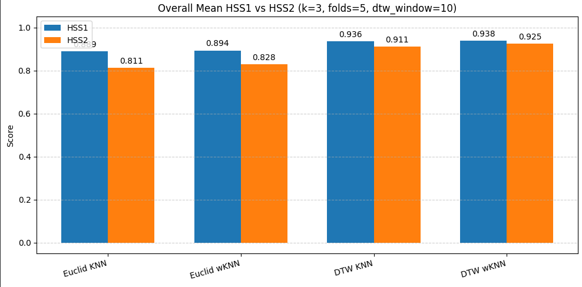
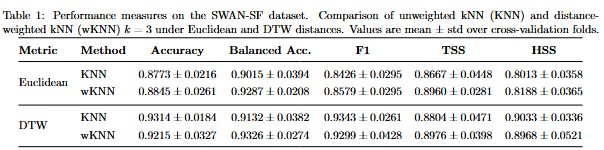
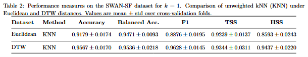
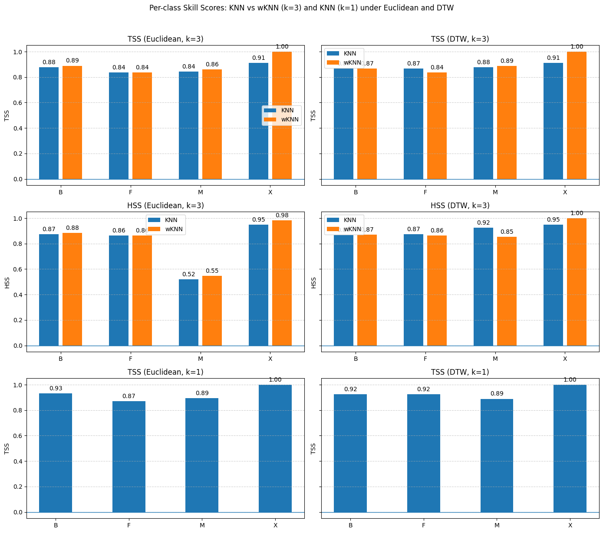
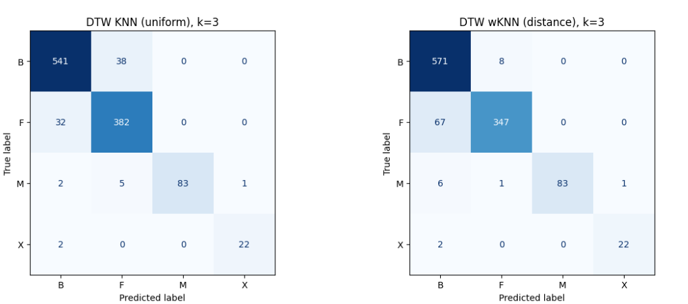
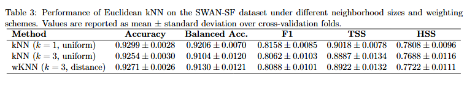
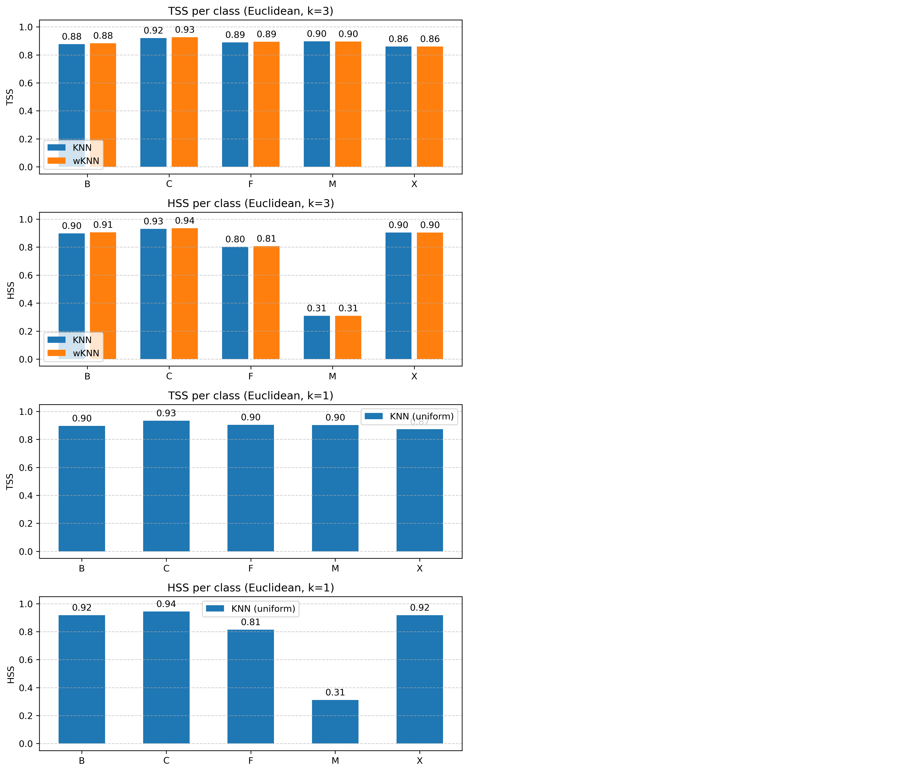
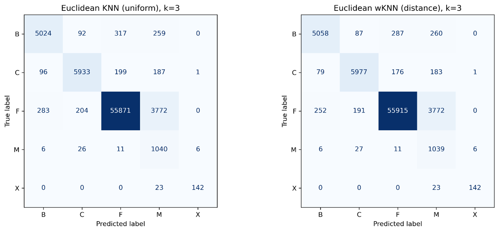

HSS1 is sometimes written in the form:
where N is the total number of samples (i.e., the total number of forecasts). Conceptually, HSS1 measures how much better the classifier performs than random guessing under the simplifying assumption that the two outcomes (flare vs. non-flare) are equally likely.
For solar flare prediction, this assumption is typically unrealistic because the dataset is strongly class imbalanced (non-flare cases are much more frequent than flare cases). As a result, HSS1 can be misleading in this setting and is therefore not commonly used for evaluating flare prediction performance.
HSS2 is the classical Heidke Skill Score formulation used throughout this work. It measures forecast skill relative to chance while accounting for the distribution of outcomes in the contingency table. In other words, it quantifies how much better the model performs than a random prediction baseline in a way that is more appropriate for imbalanced datasets such as solar flare classification.

The experiments were conducted on a randomly selected subset of the SWAN-SF dataset. The sampled data preserves the original class imbalance, containing a dominant non-flare class group and relatively fewer moderate and extreme flare events. This imbalance is representative of real-world flare occurrence and is important when interpreting accuracy versus skill-based metrics.
FLARE_TYPE
B 579
F 414
M 91
X 24
Class mapping:
B → 0, F → 1, M → 2, X → 3
Evaluation settings:
k = 3, folds = 5, dtw_window = 10, f1_avg = macro
Because the dataset is class-imbalanced, nearest-neighbor decisions are often dominated by the majority (non-flare) classes. For flare classes (especially M and X), distance-weighted kNN (wKNN) can help by giving more influence to the closest flare-like neighbors. In principle, this should improve skill-based detection performance (e.g., TSS) for rarer flare classes.

Compared to unweighted KNN, wKNN showed a slight improvement in accuracy, balanced accuracy, and F1. Importantly, the overall TSS increased from approximately 0.86 to 0.89. This improvement is primarily driven by better class-wise performance for the M and X flare classes.


The experiment shows that performance is consistently better for k = 1 than for k = 3 across all reported metrics. Increasing k adds additional neighbors that may not be truly similar to the target sample, which introduces noise. This effect is amplified under class imbalance, where majority-class neighbors are more likely to appear in the neighborhood and can dilute the signal of rarer flare classes. The reduced HSS for DTW-based weighted kNN at 𝑘=3 arises from an increase in M-class samples misclassified as the dominant B-class. Although the total number of M-class false negatives remains unchanged, HSS penalizes misclassification into majority classes more strongly, resulting in a lower class-wise HSS despite similar overall performance

For DTW-based kNN, the weighted and unweighted versions often produced very similar results. A practical interpretation is that DTW already yields a highly discriminative nearest-neighbor structure because it aligns sequences. As a result, applying additional distance weighting is not always necessary when DTW is used as the distance metric.
All experiments in this section were executed on the cluster using 20 CPU cores,
using the complete partition1 dataset (i.e., not a small subsample).
FLARE_TYPE F 60130 C 6416 B 5692 M 1089 X 165

Comparison plot: Accuracy, Balanced Accuracy, F1, TSS (sample vs full partition1)
Per-class bar plots (e.g., TSS/HSS or class-wise metric comparison)The same overall pattern observed in the smaller sample repeats in the class-wise bar plots for the full dataset. Most class-level metrics remain comparable; however, there is a significant decline for the M class, where the score drops from approximately 0.89 (sample) to 0.31 (full dataset).

Confusion matrix (Euclidean, k=3) for full Partition1The M class shows the lowest HSS because a large number of non-M samples are incorrectly classified as M (roughly 4000 false positives). Under strong class imbalance, HSS is highly sensitive to both false positives and false negatives, and it penalizes these misclassifications more strongly than accuracy-based metrics.
This is a key reason why HSS is valuable: even if the true positives (TP) for M are high (which implies a reasonably strong recall), the large false-positive burden reduces the skill relative to chance, resulting in a low HSS. The same trend is observed for k = 1 as well: overall performance remains good, but HSS remains sensitive to the M-class confusion.
Dynamic Time Warping (DTW) is computationally expensive. Running Euclidean kNN across the full Partition1 dataset completed in approximately 2 minutes using parallel execution on 20 cores. In contrast, a timing benchmark on a smaller DTW test case (200 pairwise distance computations) yielded:
DTW speedup (1 core -> 20 cores): x2.68 DTW/Euclid ratio (single-core): x507.0 DTW/Euclid ratio (20 cores): x189.1
Based on the observed DTW-to-Euclidean ratio on 20 cores (~189× slower), the estimated runtime for a DTW-based run under the same setup would be approximately:
This makes DTW significantly more costly for this experiment. In addition, GPU acceleration is generally not beneficial for kNN + DTW in this setup, and parallelization still leaves a substantial overhead. Therefore, for full-dataset evaluation, Euclidean distance is the more practical choice.